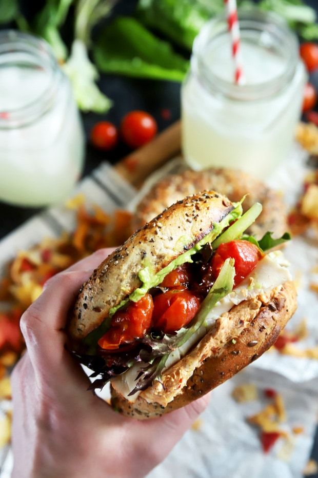

Turkey bagel

Description
Flavorful everything bagels are piled high with meat, avocado, roasted tomatoes, and a chipotle cream cheese that brings the creamy spice. It's my new bae(gal).I should stop copying internet blog recipes, they are so cringey
Ingredients
- 2 whole bagels, halved
- 6 slices deli turkey breast
- 1 cup cherry tomatoes
- 6 ounces cream cheese, room temperature
- 1 tbsp. adobo sauce
- 2 chipotle peppers, chopped (optional, for added heat)
- 1 large avocado, mashed
- 1 teaspoon lime juice
- 1/2 teaspoon black pepper
- 1/2 teaspoon salt
- 2/3 cup mixed greens
Steps
- Preheat oven to 400ºF (200ºC). Grease a rimmed baking sheet with cooking spray.
- Add cherry tomatoes in an even layer to the prepared baking sheet. Roast tomatoes until they begin to burst, about 10 minutes, turning halfway through cooking.
- While the tomatoes are roasting, make the chipotle cream cheese. In a small bowl, stir together cream cheese, adobo sauce, and 2 chopped chipotle peppers until combined. Set aside until ready to use.
- In a small bowl, stir together mashed avocado, lime juice, black pepper, and salt.
- Toast the bagel halves until golden brown.
- To assemble, spread the bottom halves of the toasted bagels with mashed avocado mixture, dividing evenly between the two.
- Divide the cream cheese evenly between the two top halves of the bagels, spreading evenly.
- Add turkey to the bottom halves of the bagels and top with mixed greens and burst cherry tomatoes. If desired, top with additional chopped chipotle peppers.
- Finish with the top halves of the bagels. Serve immediately.